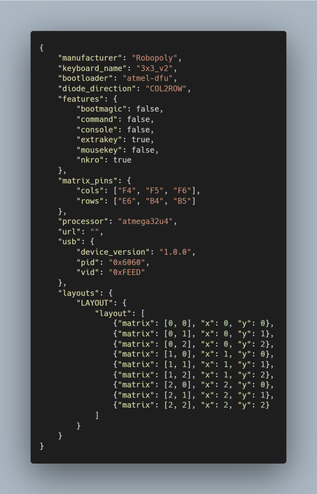
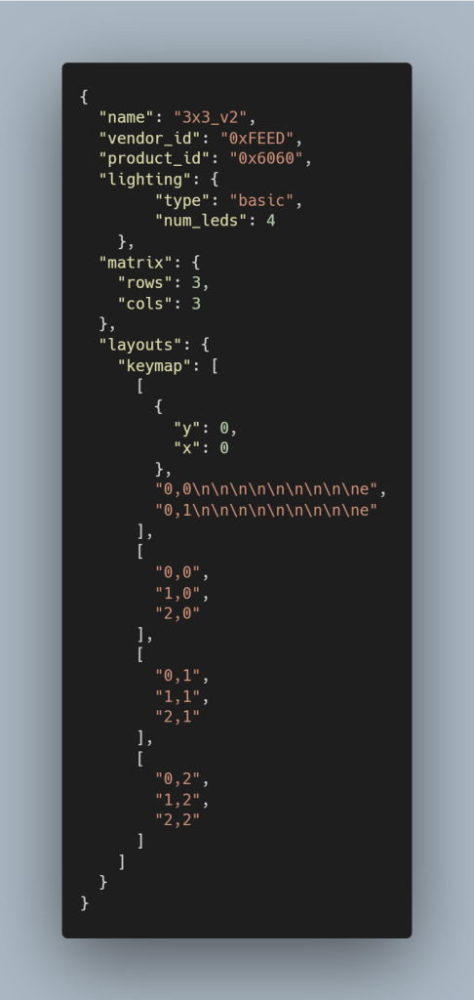
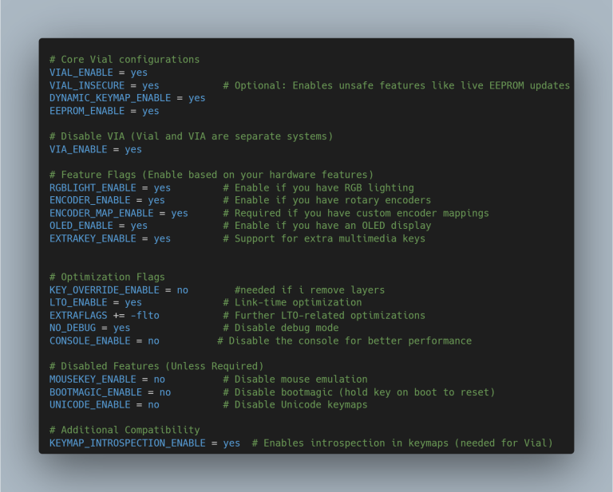
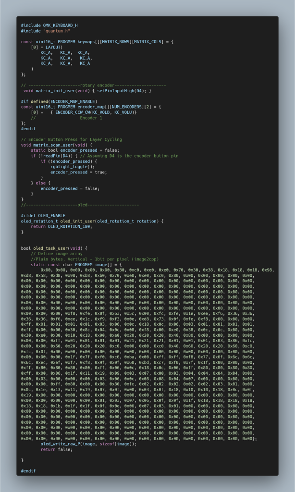
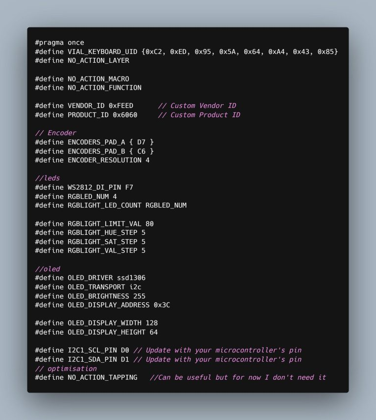

Step 4: Code explanation
Understanding the Vial QMK configuration files.
keyboard.json
This file describes the keyboard's hardware characteristics and its compatibility with Vial:
manufacturer: Robopoly.keyboard_name: 3x3_v2.bootloader: atmel-dfu.processor: atmega32u4.diode_direction: COL2ROW.matrix_pins: columns F4, F5, F6 and rows E6, B4, B5.vid: 0xFEED andpid: 0x6060.device_version: 1.0.0.- The physical position of each key in the matrix.

vial.json
This file describes the keyboard for Vial. The lighting section indicates that the keyboard
has basic lighting with four LEDs. Key Layout is used by VIA to organize the key
graphically in its interface.

rules.mk
This file enables or disables QMK and Vial features during compilation.

keymap.c
This file defines the key layout, layers, macros and custom behavior of the macropad. To convert an image into data that can be used by the OLED display, you can use image2cpp. Import your image and change the canvas size to 128×32. In output, change the "Code output format" to Plain bytes and choose 1 bit pixel.

config.h

This file is primarily used to define constants and compilation parameters for the keyboard firmware.
← Back to Macropad V2